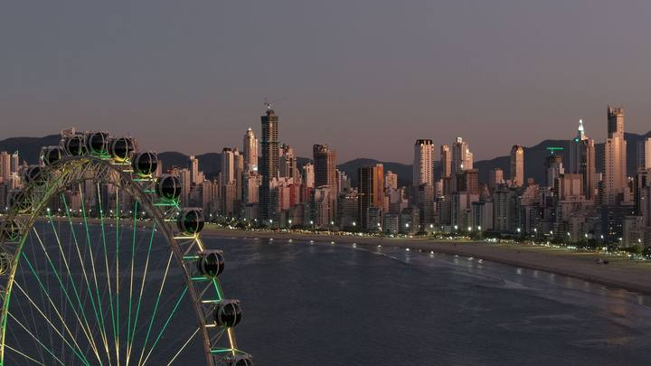
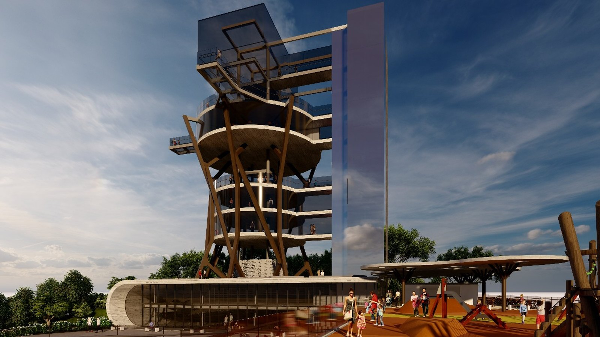
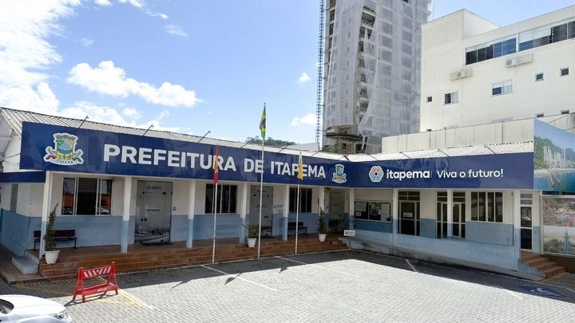
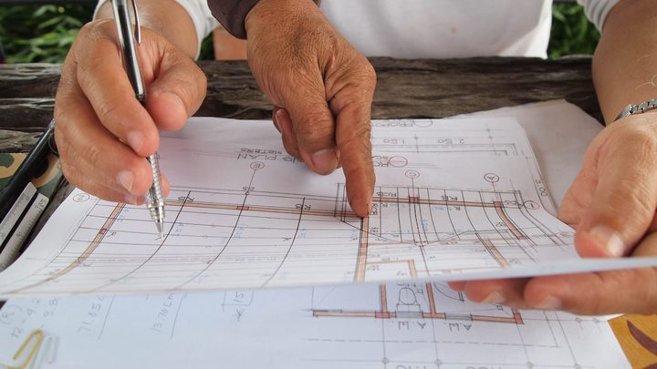

Santa Catarina · TurismoO que ver em cada cidade do litoral catarinense, de Balneário Camboriú a Florianópolis
O Mirante do Encanto no nosso guia de atrações do litoral catarinense.
Trinta anos é mais tempo que sete mandatos de prefeito. Vale entender o que está sendo entregue, o que a cidade recebe em troca e quando as propostas são abertas.
Em 30 segundos · Modo de Leitura, formato original Santa Informa
A Prefeitura abriu dois processos de concessão onerosa, por 30 anos, do Parque das Capivaras, na Meia Praia, e do Mirante do Encanto, no Canto da Praia.
As concessionárias assumem revitalização, implantação, operação, gestão e manutenção, sem custo ao município, e obtêm receita explorando o que o edital permite dentro da área.
O critério de julgamento é o maior valor de outorga. Propostas do Parque até 29 de setembro e do Mirante até 1º de outubro, às 14h, pela plataforma Licitar Digital.
TurismoPublicada em Redação Santa Informa

A Prefeitura de Itapema lançou dois editais de concessão onerosa para equipamentos turísticos: o Parque das Capivaras, na Meia Praia, e o Mirante do Encanto, no Canto da Praia. Os dois contratos têm prazo de 30 anos.
Concessão onerosa quer dizer que a empresa paga para operar. Ela assume a revitalização, a implantação, a operação, a gestão e a manutenção, e em troca fica com a receita que conseguir gerar ali dentro, nas condições que o edital define. A Prefeitura afirma que o modelo não gera custo ao município.
As duas licitações são na modalidade concorrência, em sessão pública eletrônica, e o critério de julgamento é o maior valor de outorga. Ou seja: ganha quem oferecer mais para ficar com a concessão.
Parque das Capivaras. Propostas até 29 de setembro de 2026, às 14h, com a disputa de lances a partir das 14h01.
Mirante do Encanto. Propostas até 1º de outubro de 2026, às 14h, mesma dinâmica.
Tudo pela plataforma eletrônica Licitar Digital.
No Parque das Capivaras, o edital prevê que atrativos, áreas livres, instalações e edificações sejam destinados a recreação, lazer, cultura, educação, esporte e entretenimento.
No Mirante do Encanto, o modelo é o mesmo, com as obrigações detalhadas no Termo de Referência, no contrato e nos anexos.
Prazo longo é o que torna o investimento privado viável: ninguém banca a revitalização de um mirante para operar por cinco anos. Em compensação, é a cidade se comprometendo com um arranjo que atravessa várias gestões.
O que decide se dá certo está no contrato: o que pode ser cobrado do visitante, o que continua de acesso livre, e o que acontece se a concessionária não cumprir. Essas respostas estão nos anexos, e é neles que vale olhar.
O resumo de 30 segundos está no topo e a versão completa é o texto acima. Aqui ficam as três leituras da casa sobre o mesmo assunto.
Clara, a otimista
Mirante e parque parados não servem a ninguém. Se o modelo trouxer investimento privado para revitalizar e manter, a cidade ganha dois equipamentos funcionando sem tirar dinheiro do orçamento, que está disputado com creche e asfalto.
E o critério ser o maior valor de outorga significa que o município ainda recebe pela concessão. Não é doação, é venda de direito de operar.
Seu Prudêncio, o criterioso
Trinta anos merece atenção. É contrato que atravessa sete mandatos de prefeito, e a qualidade do resultado depende quase toda do que está escrito nos anexos, não do anúncio.
Três perguntas que valem a leitura do edital: o que pode ser cobrado do visitante, quanto da área continua de acesso livre e o que acontece se a concessionária não investir o prometido. Concessão de espaço público sem gatilho de reversão claro costuma virar problema no ano dez.
Uma sugestão útil seria a Prefeitura publicar um resumo dessas três respostas em linguagem simples, ao lado do edital. Feita a ressalva, licitação eletrônica com critério objetivo de outorga é o desenho correto, e o prazo até setembro dá tempo de a cidade ler o que está sendo proposto.
Caco, o sarcástico
Trinta anos de concessão. Quem nasce hoje em Itapema vai poder levar o próprio filho ao mirante antes de o contrato acabar.
Parque das Capivaras concedido à iniciativa privada. Resta saber se as capivaras foram consultadas, porque elas estavam lá primeiro e não assinaram nada.
Fora a piada: o edital está público e tem anexo. Quem se importa com esses dois lugares tem até setembro para ler.
Fontes: Prefeitura de Itapema, Gabinete de Governo e Infraestrutura.

Santa Catarina · TurismoO Mirante do Encanto no nosso guia de atrações do litoral catarinense.

Itapema · ServiçoA audiência do orçamento de 2027, onde as prioridades da cidade são discutidas.

Litoral · EconomiaEmpresários do litoral já colocaram R$ 17 milhões em projeto de obra pública.